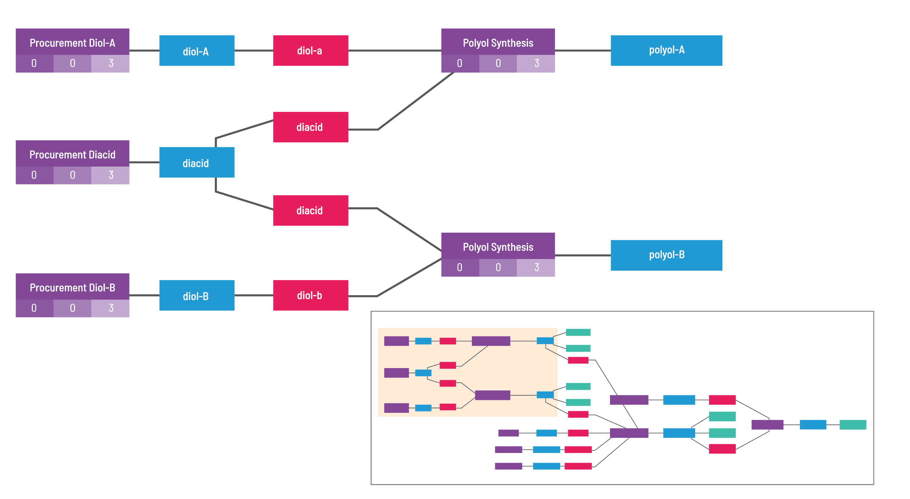

GEMD Documentation¶
GEMD stands for Graphical Expression of Materials Data. It's an open-source format initially developed by Citrine Informatics. A version of it is used in their AI platform for materials and chemicals, but as described here it can be used independently.

The model links together materials, the processes that produced them, and the measurements that characterize them.
This facilitates the backwards traversal from (i) a measurement to (ii) the material on which it was performed to (iii) the process by which it was produced to (iv) the materials which were used in that process.
It generalizes and matures preparation and subSystems objects within the PIF (Physical Information File).
Additionally, the model makes a first-class distinction between intent and realization, captured by Spec and Run objects, respectively.
A single intent Spec can be realized into multiple Run objects.
This generalizes and matures the ideal concept from the PIF's Composition and Quantity objects.
The model contains a new type of object: the Measurement Run.
Measurements capture discrete measurement activity, including the parameters and conditions associated with a set of measured properties.
This many-to-many relationship between properties, conditions, and parameters resolves a fundamental ambiguity present in the PIF -- which properties were measured at the same time under the same conditions?
Specification of the NextGen Data format¶
The format is described in the following subsections:
- Value Types
- Attributes
- Attribute Templates
- Object Templates
- Objects
- Unique Identifiers
- Tags
- File Links
Getting help¶
Check out our FAQ!